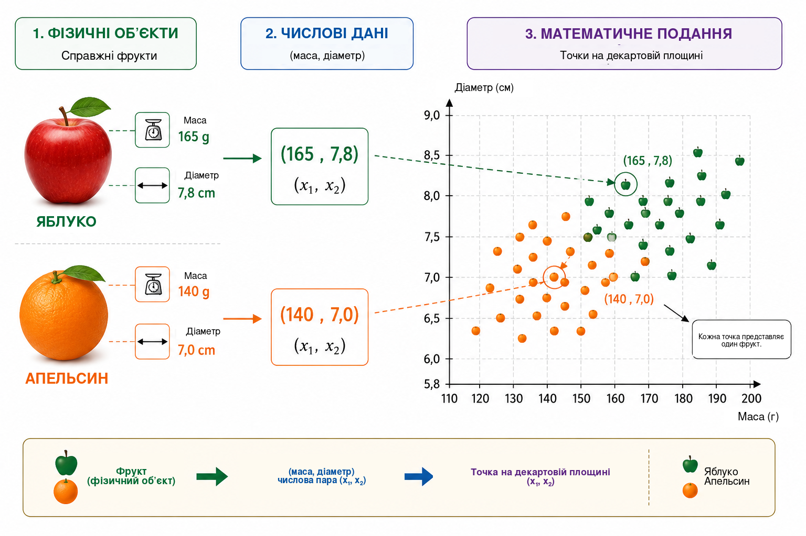
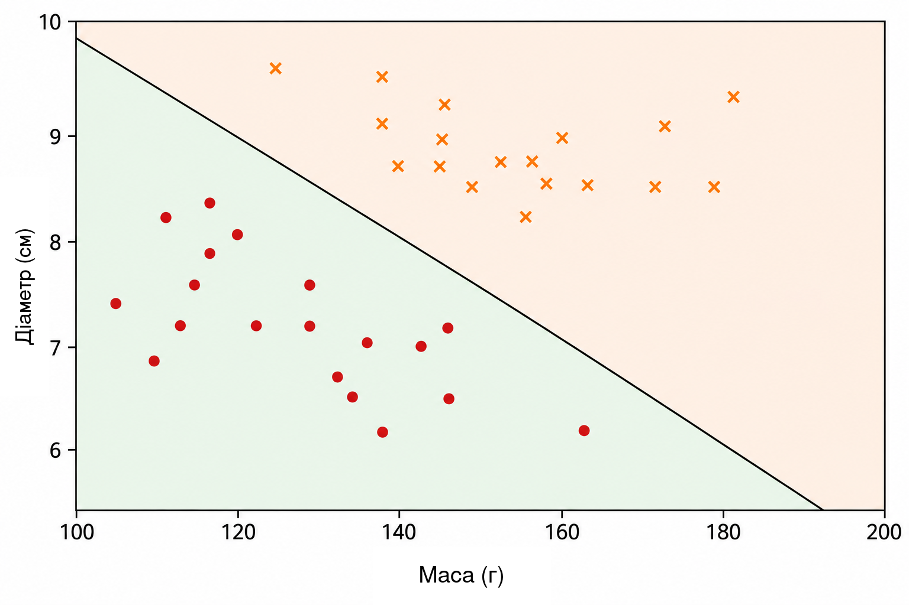
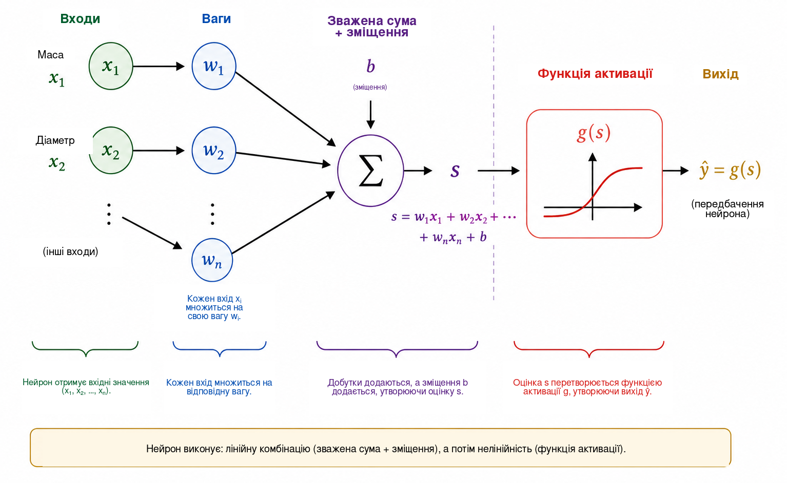
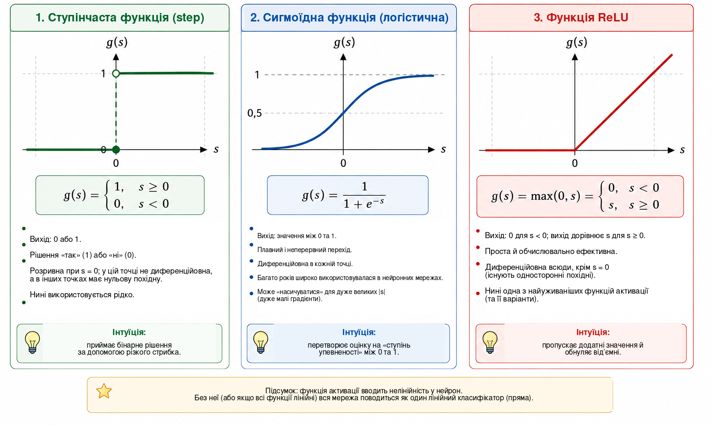
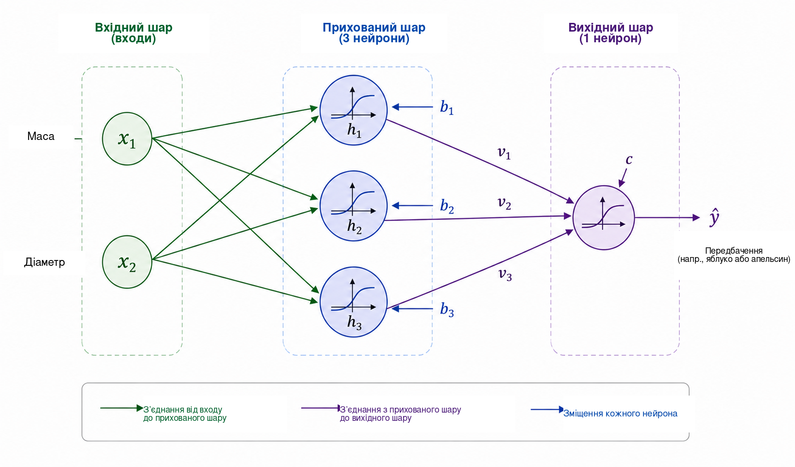
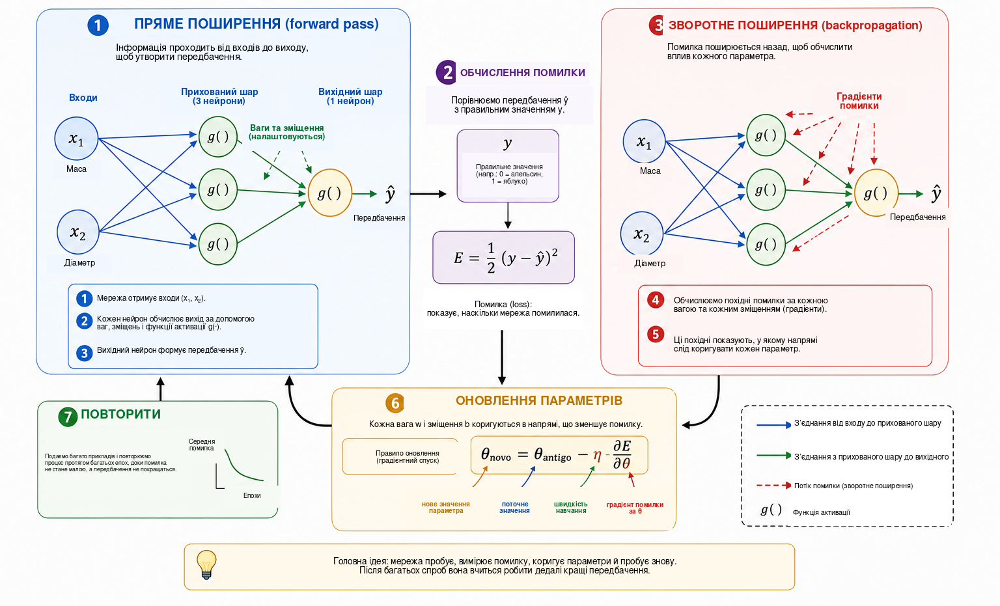
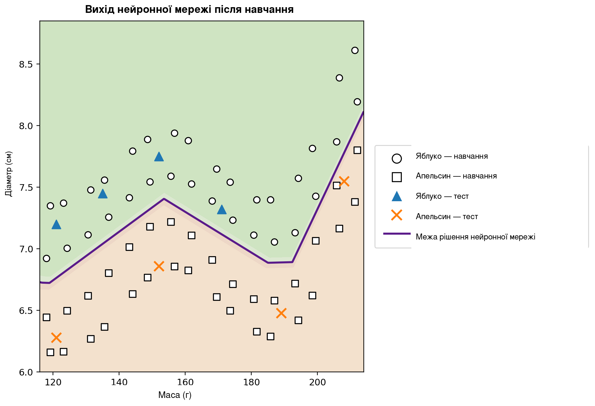

Коли комп’ютер може навчатися?
У повсякденному житті ми майже непомітно для себе постійно розв’язуємо задачі класифікації. Поглянувши на фрукт, швидко визначаємо, яблуко це чи апельсин; отримавши повідомлення на телефон, відрізняємо звичайне спілкування від небажаної реклами; у медичному аналізі кілька вимірювань можуть поєднуватися для підтримки рішення; а у фінансових установах перед наданням кредиту оцінюють багато різних відомостей. У всіх цих прикладах кілька характеристик розглядаються разом, щоб отримати відповідь.
У багатьох традиційних комп’ютерних програмах правила, що визначають цю відповідь, явно задає програміст. Такий підхід добре працює, коли правила відомі й їх можна чітко сформулювати. Він стає менш ефективним, коли дані дуже мінливі або коли важко наперед описати всі умови, потрібні для доброго рішення. Це природно приводить до запитання:
Чи можемо ми створити програму, яка навчиться правилу прийняття рішення на прикладах, замість того щоб отримати це правило наперед?
Це одна з центральних ідей машинного навчання — галузі штучного інтелекту, що вивчає методи налаштування моделей за даними . У задачі навчання з учителем алгоритм отримує приклади разом із правильними відповідями, а ми шукаємо модель, здатну робити корисні передбачення і для випадків, які не використовувалися під час навчання. Серед багатьох моделей, створених для цього, штучні нейронні мережі набули великого значення в розпізнаванні зображень, обробці мови, аналізі сигналів і прогнозуванні часових рядів .
Використання нейронних мереж як містка між математикою, обчисленнями та шкільною освітою вже обговорювали в журналі Professor de Matemática Online Батіста і Мартінс , які описують навчальну діяльність, пов’язану з підготовкою вчителів, Python і розпізнаванням цифр. Ця стаття йде додатковим шляхом. Наша головна мета — показати внутрішню математику невеликої нейронної мережі, починаючи з аналітичної геометрії та крок за кроком доходячи до обчислення градієнтів і ручної реалізації зворотного поширення.
Попри складність сучасних застосувань, математичне ядро нейронної мережі можна ввести за допомогою відносно знайомих ідей. На базовому рівні нейронна мережа є композицією функцій, параметри яких налаштовуються за даними. Ми почнемо з простої геометричної задачі, переосмислимо розділяючу пряму як штучний нейрон, з’єднаємо кілька нейронів, дослідимо роль функцій активації та покажемо, як похідні дають змогу автоматично налаштовувати параметри мережі. Потім реалізуємо повний невеликий приклад у Python, зберігаючи безпосередню відповідність між рівняннями й кодом.
Математичне подання задачі
Щоб зрозуміти, як працює нейронна мережа, почнемо з навмисно простої задачі: відрізнити яблука від апельсинів. Фрукт має багато характеристик, що можуть бути корисними для цього завдання, наприклад колір, масу, діаметр, текстуру й аромат. Проте початкова математична модель не повинна одразу враховувати всю цю складність. Ми використаємо лише дві величини, які легко виміряти: масу в грамах і діаметр у сантиметрах.
Отже, кожен фрукт представлятимемо впорядкованою парою \[(x_1,x_2),\] де \[x_1=\text{маса} \qquad\text{і}\qquad x_2=\text{діаметр}.\]
Таким чином, пара \((155,\;7.2)\) описує фрукт масою \(155\) г і діаметром \(7.2\) см. Замінюючи фізичний об’єкт двома числовими вимірюваннями, ми ставимо кожному фрукту у відповідність точку на декартовій площині: перша координата задає масу, а друга — діаметр. На Рисунку 1 показано таке подання для умовного набору яблук та апельсинів.

Це перетворення змінює видиму природу задачі. Замість прямого запитання, як розпізнати яблуко чи апельсин, можна поставити геометричне питання: як розділити на площині точки, що належать двом класам? Така зміна погляду є фундаментальною для машинного навчання. Зображення, тексти, звуки й експериментальні сигнали мають бути перетворені на числові подання, перш ніж алгоритм зможе їх обробляти. У нашому прикладі кожен об’єкт має лише дві координати; у реальних застосуваннях подання може містити сотні, тисячі або навіть мільйони компонентів. Принцип той самий: кожному прикладу відповідає набір чисел, а модель шукає правило, яке відображає це подання в потрібну відповідь.
Почнемо з найпростішого геометричного правила й запитаємо, чи може одна пряма достатньо добре розділити точки яблук і апельсинів.
Пряма як класифікатор
Після того як кожен фрукт подано точкою на декартовій площині, класифікація стає геометричною задачею: чи може пряма розділити яблука й апельсини? Це питання відображає основну ідею важливого класу методів машинного навчання, відомих як лінійні класифікатори.
Розгляньмо пряму, що проходить крізь хмару даних, як показано на Рисунку 2. Пряма ділить площину на дві півплощини. Якщо більшість точок яблук лежить з одного боку, а більшість точок апельсинів — з іншого, то положення нового фрукта відносно прямої можна використати як правило класифікації. Вимірявши його масу й діаметр, ми представляємо фрукт точкою та визначаємо, з якого боку прямої ця точка лежить.

На декартовій площині \((x_1,x_2)\) пряму можна описати рівнянням \[w_1x_1+w_2x_2+b=0, \qquad (w_1,w_2)\neq(0,0).\]
Вектор \((w_1,w_2)\) перпендикулярний до прямої, тому визначає її орієнтацію, тоді як параметр \(b\) впливає на її положення. Це подання має невелику надлишковість: множення \(w_1\), \(w_2\) і \(b\) на одну й ту саму ненульову сталу дає ту саму пряму. Отже, параметри, що описують межу, не є єдиними. Їхня числова інтерпретація також залежить від масштабу змінних. Оскільки масу вимірюють у грамах, а діаметр у сантиметрах, числові значення \(w_1\) і \(w_2\) не слід безпосередньо порівнювати, не врахувавши різні одиниці вимірювання.
Саме рівняння прямої дає простий спосіб визначити, з якого боку межі лежить точка. Введемо оцінку \[s(x_1,x_2)=w_1x_1+w_2x_2+b.\]
Якщо \(s(x_1,x_2)=0\), точка лежить на прямій. Якщо \(s(x_1,x_2)>0\), вона міститься в одній півплощині; якщо \(s(x_1,x_2)<0\) — в іншій. Якщо домовитися, що додатні значення відповідають яблукам, а від’ємні — апельсинам, правило набуває вигляду \[\begin{cases} s(x_1,x_2)\geq 0 & \Longrightarrow \text{яблуко},\\ s(x_1,x_2)<0 & \Longrightarrow \text{апельсин}. \end{cases}\]
Наприклад, розгляньмо межу, задану параметрами \[w_1=\frac{1}{10}, \qquad w_2=2, \qquad b=-30.\] Для фрукта масою \(160\) г і діаметром \(7.8\) см маємо \[\begin{aligned} s &=\frac{1}{10}\times160+2\times7.8-30\\ &=16+15.6-30\\ &=1.6. \end{aligned}\] Оскільки оцінка додатна, точка лежить у півплощині, яку ми пов’язали з яблуками. Отже, цей класифікатор визначить фрукт як яблуко.
Не кожний вибір \(w_1\), \(w_2\) і \(b\) дає хорошу класифікацію. Деякі прямі погано розділяють дві групи, тоді як інші роблять менше помилок. Задача навчання полягає саме в тому, щоб за попередньо розміченими прикладами визначити значення параметрів, які зменшують певну міру помилки моделі. Замість того щоб безпосередньо програмувати положення прямої, ми хочемо, щоб алгоритм сам налаштовував її коефіцієнти за даними.
Одна пряма може добре працювати, якщо класи приблизно лінійно роздільні. Для складніших наборів даних може знадобитися нелінійна межа. Перш ніж перейти до цього обмеження, переосмислимо щойно побудований класифікатор як елементарну обчислювальну одиницю — штучний нейрон.
Штучний нейрон
У попередньому розділі вираз \[s=w_1x_1+w_2x_2+b\] використовувався, щоб визначити, з якого боку прямої лежить фрукт. Той самий вираз можна розглядати як перший етап обчислення, яке виконує штучний нейрон. Нейрон отримує числові входи, комбінує їх за допомогою ваг і зміщення, а потім застосовує математичну функцію, щоб отримати вихід.
У нашому прикладі входами є маса \(x_1\) і діаметр \(x_2\). Кожен вхід множиться на параметр, який називають вагою; добутки додаються разом зі сталим членом \(b\), який називають зміщенням (bias). На Рисунку 3 цю операцію показано схематично.

Ваги визначають, як зміни входів впливають на оцінку. Якщо \(x_2\) та всі інші величини залишити незмінними, зміна \(\Delta x_1\) змінює \(s\) на \(w_1\Delta x_1\). Аналогічно зміна \(\Delta x_2\) змінює оцінку на \(w_2\Delta x_2\). Важливий і знак: додатна вага означає, що збільшення входу збільшує оцінку, тоді як від’ємна вага дає протилежний ефект. Таке тлумачення слід застосовувати обережно, коли різні змінні мають різні одиниці й масштаби. Тому в практичних реалізаціях вхідні дані перед навчанням часто нормалізують або стандартизують.
Зміщення \(b\) є сталим членом афінного перетворення. Геометрично воно дає змогу зсувати межу рішення. Якщо \(b=0\), рівняння \[w_1x_1+w_2x_2=0\] змушує пряму проходити через початок координат. Завдяки зміщенню межа може переміщуватися в інші положення. Еквівалентно, коли \(x_1=x_2=0\), оцінка просто дорівнює \(s=b\).
Оцінка не обов’язково є остаточним виходом нейрона. Загалом до неї застосовують функцію активації \(g\): \[\widehat{y}=g(s)=g\left(w_1x_1+w_2x_2+b\right).\] Отже, обчислення складається з двох етапів, \[\begin{aligned} s &= w_1x_1+w_2x_2+b,\\[4pt] \widehat{y} &= g(s). \end{aligned}\]
Використовуючи значення параметрів із попереднього розділу, отримуємо \(s=1.6\). Якщо вибрати ступінчасту функцію \[g(s)= \begin{cases} 1, & s\geq0,\\ 0, & s<0, \end{cases}\] то \(\widehat{y}=g(1.6)=1\). За нашою домовленістю фрукт класифікується як яблуко. За такої активації рішення змінюється, коли \(s\) переходить через нуль, тому межею класів є саме \[w_1x_1+w_2x_2+b=0.\]
Отже, один нейрон — це простий математичний об’єкт із параметрами, які можна налаштовувати. Його справжня важливість проявляється тоді, коли багато таких одиниць з’єднують між собою. Але перш ніж будувати мережу, треба зрозуміти, чому функція активації є необхідною.
Навіщо потрібна функція активації?
Нейрон спочатку обчислює оцінку за допомогою афінного перетворення, а вже потім застосовує функцію активації. Цей другий етап необхідний, якщо нейронна мережа має представляти складні залежності. Щоб побачити чому, уявімо мережу без функцій активації. Кожна її одиниця тоді мала б вигляд \[y=w_1x_1+w_2x_2+b.\]
Для одновимірної ілюстрації припустімо, що перша одиниця обчислює \[h=ax+b\] а друга — \[y=ch+d.\] Підстановка дає \[y=c(ax+b)+d=acx+(cb+d),\] що знову є афінною функцією від \(x\). Те саме справедливо в кількох вимірах: композиція афінних перетворень залишається афінною. Тому додавання багатьох шарів без нелінійної операції принципово не збільшує виразну здатність мережі; всю композицію можна було б замінити одним афінним перетворенням.
Функція активації усуває це обмеження. Після обчислення оцінки \(s\) нейрон застосовує, як правило, нелінійне відображення \[h=g(s).\] Коли кілька таких одиниць з’єднано, отриману композицію вже не можна звести до одного афінного перетворення. Це дає мережі змогу будувати складніші межі рішення.
Найпростішою активацією є ступінчаста функція, \[g(s)= \begin{cases} 1, & s\geq0,\\ 0, & s<0. \end{cases}\] Вона формує бінарне рішення й дуже корисна для розуміння класифікації. Однак її похідна дорівнює нулю для \(s\neq0\) і не визначена при \(s=0\). Оскільки градієнтне навчання використовує похідні, щоб визначати напрям зміни параметрів, ступінчаста функція не підходить для цього механізму навчання.
Однією з альтернатив є сигмоїдна функція, \[\sigma(s)=\frac{1}{1+e^{-s}}.\] Вона відображає будь-яке дійсне число в значення строго між \(0\) і \(1\). Для дуже від’ємних \(s\) вихід наближається до \(0\); для дуже додатних — до \(1\); між цими крайніми випадками перехід є плавним. Сигмоїда диференційовна всюди, причому \[\sigma'(s)=\sigma(s)\bigl(1-\sigma(s)\bigr).\] Оскільки її значення лежать між \(0\) і \(1\), її часто використовують у вихідному шарі бінарного класифікатора. У ймовірнісному формулюванні з відповідною функцією втрат вихід можна інтерпретувати як оцінку ймовірності класу, позначеного \(1\). Проте в прихованих шарах сигмоїда може створювати проблему: для входів великої за модулем величини її похідна стає дуже малою, що сприяє проблемі зникнення градієнта в глибоких мережах.
Широко вживаною активацією прихованих шарів є ReLU (Rectified Linear Unit), \[\mathrm{ReLU}(s)=\mathrm{max}(0,s) = \begin{cases} 0, & s<0,\\ s, & s\geq0. \end{cases}\] Хоча вона складається з двох лінійних частин, ReLU не є глобально лінійною. Її похідна дорівнює \(0\) для \(s<0\) і \(1\) для \(s>0\). У точці \(s=0\) звичайна похідна не існує, тому програмні реалізації використовують певну домовленість для градієнта. Для додатних входів похідна не зменшується зі зростанням \(s\), що дає змогу уникнути одного з механізмів насичення сигмоїди.
На Рисунку 4 ці три активації порівнюються візуально: різкий стрибок ступінчастої функції, плавний перехід сигмоїди та зміна нахилу ReLU.

Їхні основні властивості підсумовано нижче.
| Функція | Вихід | Похідна | Типове використання |
|---|---|---|---|
| Ступінчаста | \(\{0,1\}\) | Нуль для \(s\neq0\); не визначена при \(s=0\) | Історичні моделі та дидактичні приклади |
| Сигмоїдна | \((0,1)\) | Існує для кожного \(s\) | Вихідний шар у бінарній класифікації |
| ReLU | \([0,\infty)\) | \(0\) для \(s<0\) і \(1\) для \(s>0\) | Приховані шари |
Деталі цих функцій різняться, але їхня спільна концептуальна роль полягає у введенні нелінійності. Саме ця нелінійність дозволяє невеликій мережі з наступного розділу описувати залежності, які не може відтворити одна пряма.
Для читачів, які бажають заглибитися в тему, Гайкін дає класичний виклад нейронних мереж, а Гудфеллоу, Бенджіо та Курвіль розглядають функції активації й навчання глибоких мереж у ширшому контексті. Вільно доступна книга Нільсена особливо придатна для формування інтуїції щодо нейронів, активацій і навчання.
Побудова невеликої нейронної мережі
Розглянемо мережу з двома входами, одним прихованим шаром із трьох нейронів та одним вихідним нейроном. Входи залишаються \[x_1=\text{маса}, \qquad x_2=\text{діаметр},\] і обидва подаються на кожний прихований нейрон, як показано на Рисунку 5.

Нехай виходами прихованого шару є \(h_1\), \(h_2\) і \(h_3\). Кожен нейрон отримує ті самі два входи, але має власні ваги й зміщення: \[\begin{aligned} h_1&=g\left(w_{11}x_1+w_{12}x_2+b_1\right),\\[4pt] h_2&=g\left(w_{21}x_1+w_{22}x_2+b_2\right),\\[4pt] h_3&=g\left(w_{31}x_1+w_{32}x_2+b_3\right). \end{aligned}\]
Хоча всі три нейрони отримують ті самі масу й діаметр, вони можуть давати різні відповіді, бо їхні параметри різні. Під час навчання ці параметри налаштовуються так, щоб проміжні активації стали корисними для класифікації.
Три величини \(h_1\), \(h_2\) і \(h_3\) потім надходять до вихідного нейрона, який обчислює \[s_{\mathrm{out}}=v_1h_1+v_2h_2+v_3h_3+c\] і формує \[\widehat{y}=g_{\mathrm{out}}\left(s_{\mathrm{out}}\right).\] Для нашої бінарної задачі використаємо сигмоїдний вихід: \[\widehat{y}=\sigma\left(v_1h_1+v_2h_2+v_3h_3+c\right), \qquad 0<\widehat{y}<1.\]
Якщо позначити яблуко через \(y=1\), а апельсин через \(y=0\), поріг \(0.5\) дає правило класу \[\widehat{y}\geq0.5 \Longrightarrow \text{яблуко}, \qquad \widehat{y}<0.5 \Longrightarrow \text{апельсин}.\] Отже, значення поблизу \(1\) сильно пов’язані з яблуками, а значення поблизу \(0\) — з апельсинами. Як зазначалося раніше, числове тлумачення \(\widehat{y}\) як імовірності потребує додаткових припущень щодо моделі та її навчання. Для використаного тут правила класифікації достатньо розглядати \(\widehat{y}\) як неперервний вихід мережі.
Центральною особливістю цієї архітектури є проміжне подання \[(x_1,x_2) \longrightarrow (h_1,h_2,h_3) \longrightarrow \widehat{y}.\] Мережа отримує дві ознаки та конструює три нові величини перед формуванням остаточної відповіді. Ці активації не задаються вручну: вони залежать від ваг і зміщень, а отже змінюються під час навчання параметрів.
Попри невеликий розмір, мережа вже має тринадцять параметрів, що налаштовуються. Три приховані нейрони містять \[3(2+1)=9\] параметрів, а вихідний нейрон додає \[3+1=4.\] Отже, \[9+4=13.\]
Той самий підрахунок прозоро видно в матричному записі. Визначимо \[\mathbf{x}= \begin{bmatrix} x_1\\x_2 \end{bmatrix}, \qquad W^{(1)}= \begin{bmatrix} w_{11}&w_{12}\\ w_{21}&w_{22}\\ w_{31}&w_{32} \end{bmatrix}, \qquad \mathbf{b}^{(1)}= \begin{bmatrix} b_1\\b_2\\b_3 \end{bmatrix}.\] Тоді прихований шар компактно записується як \[\mathbf{h}=g\left(W^{(1)}\mathbf{x}+\mathbf{b}^{(1)}\right),\] де \(g\) діє покомпонентно. Для виходу маємо \[\widehat{y} = \sigma\left(W^{(2)}\mathbf{h}+b^{(2)}\right),\] де \[W^{(2)}= \begin{bmatrix} v_1&v_2&v_3 \end{bmatrix}.\]
Цей запис передбачає структуру, що з’явиться у програмі Python. Коли фрукт подається на вхід і ми послідовно обчислюємо активації до отримання \(\widehat{y}\), виконується пряме поширення або прямий прохід (forward pass). Залишається головне питання: як автоматично визначити тринадцять параметрів так, щоб передбачення узгоджувалися з даними?
Як нейронна мережа навчається?
Ваги й зміщення наперед невідомі. Їх треба налаштувати, використовуючи приклади, для яких правильна відповідь відома. Цей процес називається навчанням і його можна підсумувати циклом \[\boxed{\text{передбачити}} \longrightarrow \boxed{\text{оцінити помилку}} \longrightarrow \boxed{\text{оновити параметри}} \longrightarrow \boxed{\text{повторити}}.\]
Розгляньмо фрукт масою \(140\) г і діаметром \(7.0\) см, правильним класом якого є апельсин, тобто \(y=0\). Припустімо, що на певному етапі навчання мережа видає \(\widehat{y}=0.80\). Однією з простих мір невідповідності між передбаченням і цільовим значенням є квадратична помилка \[E=\frac{1}{2}\left(y-\widehat{y}\right)^2.\] Для цього прикладу \[E=\frac{1}{2}(0-0.80)^2=0.32.\]
Цей вираз є функцією втрат для одного прикладу. Оскільки це квадрат, \(E\geq0\), а передбачення, що далі від цільового значення, отримують більший штраф. Множник \(1/2\) не змінює положення мінімуму, але спрощує похідні. У бінарній класифікації часто використовують інші функції втрат, особливо перехресну ентропію. Тут ми застосовуємо квадратичну помилку, оскільки її алгебра прозора й достатня для введення оптимізації та зворотного поширення .
Якщо навчальна вибірка містить \(N\) прикладів, однією з глобальних мір є середня втрата \[J=\frac{1}{N}\sum_{i=1}^{N}E_i.\] Кожне передбачення залежить від ваг і зміщень мережі, тому \(J\) також залежить від усіх цих параметрів. Навчання означає пошук таких значень параметрів, за яких \(J\) є малою.
Щоб зрозуміти механізм налаштування, спочатку уявімо, що всі параметри, крім однієї ваги \(w\), зафіксовані. Тоді втрату можна розглядати як функцію \(J=J(w)\). На Рисунку 6 підсумовано основні етапи навчання, які ми зараз розглянемо.

Для читачів із невеликим досвідом математичного аналізу похідну тут можна тлумачити як міру локальної чутливості: вона показує, як мала зміна одного параметра зазвичай змінює втрату. Її знак указує, у якому напрямі функція локально зростає або спадає, а модуль характеризує силу цієї локальної зміни.
Похідна \[\frac{\partial J}{\partial w}\] задає локальний нахил. Якщо вона додатна, невелике збільшення \(w\) зазвичай збільшує \(J\), тому вагу слід рухати в протилежному напрямі. Якщо вона від’ємна, збільшення \(w\) локально має тенденцію зменшувати \(J\). Обидва випадки описуються формулою \[w_{\mathrm{new}} = w_{\mathrm{old}} - \eta\frac{\partial J}{\partial w},\] яка виражає базову ідею градієнтного спуску. Додатне число \(\eta\) називають швидкістю навчання; воно керує розміром кроку. Надто мале значення може зробити навчання повільним, а надто велике — спричинити коливання або нестійкість.
Для мережі з багатьма параметрами позначимо через \(\theta\) будь-яку вагу або зміщення. Тоді оновлення має вигляд \[\theta_{\mathrm{new}} = \theta_{\mathrm{old}} - \eta\frac{\partial J}{\partial\theta}.\] Сукупність усіх частинних похідних утворює градієнт функції втрат. Геометрично градієнт спрямований у бік найшвидшого локального зростання, тому від’ємний градієнт задає локальний напрям спадання.
Треба ще навчитися обчислювати ці похідні, коли мережа є композицією кількох функцій. Під час прямого проходу інформація рухається так: \[\text{входи} \longrightarrow \text{прихований шар} \longrightarrow \text{вихід}.\] Щоб визначити, як параметр раннього шару впливає на втрату, математично простежуємо ланцюг залежностей у зворотному напрямі. Цю процедуру називають зворотним поширенням (backpropagation). По суті, це систематичне й ефективне застосування правила ланцюга. Румельгарт, Гінтон і Вільямс є класичним джерелом, що популяризувало цю процедуру для мереж із прихованими шарами; Нільсен подає докладний і особливо дидактичний вивід.
Для простого ланцюга залежностей, у якому \(E\) залежить від \(\widehat{y}\), \(\widehat{y}\) залежить від активації \(h\), а \(h\) своєю чергою залежить від ваги \(w\), правило ланцюга дає \[\frac{\partial E}{\partial w} = \frac{\partial E}{\partial\widehat{y}} \, \frac{\partial\widehat{y}}{\partial h} \, \frac{\partial h}{\partial w}.\] Кожний множник описує один етап впливу \(w\) на кінцеву втрату. У більших мережах є багато таких ланцюгів, а зворотне поширення організує обчислення так, щоб проміжні похідні можна було повторно використовувати, а не обчислювати окремо для кожного параметра.
На практиці навчання використовує багато прикладів. Один повний прохід усією навчальною вибіркою називають епохою. Параметри можна оновлювати після кожного прикладу, як у дидактичній програмі нижче, або після невеликих груп прикладів, що називаються мініпакетами (mini-batches), як часто роблять у більших мережах. У будь-якому разі цикл передбачень, втрат, градієнтів і оновлень повторюється протягом багатьох епох.
Наочний спосіб побачити цю еволюцію — простежити передбачення для одного фіксованого прикладу на різних етапах навчання. Знову розгляньмо фрукт масою \(140\) г і діаметром \(7.0\) см, правильним класом якого є апельсин. У Таблиці 1 показано умовну послідовність. Ці значення не відповідають конкретному запуску; вони лише ілюструють механізм.
| Епоха | Передбачення \(\widehat{y}\) | Втрата \(E\) | Класифікація |
|---|---|---|---|
| 1 | 0.86 | 0.37 | Яблуко |
| 5 | 0.71 | 0.25 | Яблуко |
| 10 | 0.55 | 0.15 | Яблуко |
| 20 | 0.31 | 0.05 | Апельсин |
| 40 | 0.09 | 0.004 | Апельсин |
Спочатку вихід близький до \(1\), і фрукт помилково класифікується як яблуко. У міру налаштування параметрів передбачення зменшується й зрештою перетинає поріг \(0.5\), даючи правильний клас. У цьому процесі змінюються числові значення ваг і зміщень; архітектура мережі залишається фіксованою.
Зменшення втрат на навчальних даних не є кінцевою метою. Корисна мережа повинна також добре передбачати для прикладів, які не використовувалися для налаштування параметрів. Цю здатність називають узагальненням. Коли модель надто сильно пристосовується до особливостей навчальної вибірки й гірше працює на нових даних, маємо перенавчання. У ретельніших оцінюваннях дані зазвичай поділяють на навчальну, валідаційну та тестову вибірки: перша використовується для налаштування параметрів, друга підтримує рішення під час розроблення моделі, а третю резервують для остаточного оцінювання. Ширше обговорення узагальнення й оцінювання моделей можна знайти у Faceli та ін. і Goodfellow, Bengio та Courville .
Отже, ми дійшли математичного змісту навчання нейронної мережі. У цьому контексті навчатися означає налаштовувати параметри композиції функцій так, щоб зменшувати міру помилки на даних і, в ідеалі, узагальнювати на нові приклади. Мережа робить передбачення, обчислює втрату, використовує похідні, щоб визначити вплив параметрів на цю втрату, і виконує послідовність малих корекцій.
Від математики до Python
Тепер перейдемо від рівнянь до виконуваної програми. Мета полягає не у використанні спеціалізованої бібліотеки нейронних мереж, а в безпосередній реалізації за допомогою NumPy математичних операцій, розвинених у статті . Завдяки цьому можна рядок за рядком побачити, як у коді з’являються лінійні комбінації, функції активації, обчислення втрат, зворотне поширення та градієнтний спуск.
Для переконливішого фінального прикладу використаємо синтетичний набір даних, розподілений по ширшій області “маса–діаметр”. Ми й далі працюємо лише з двома фізичними ознаками — масою в грамах і діаметром у сантиметрах, — але тепер розміщуємо \(64\) навчальні приклади в широкій області площини й залишаємо ще вісім прикладів для ілюстративного тесту. Дані залишаються синтетичними й лежать у правдоподібних діапазонах для яблук та апельсинів. Їх побудовано так, щоб отримати нелінійну межу рішення без надмірної концентрації всіх точок у кількох штучних кластерах.
Геометрична ідея проста. Ми задаємо опорну криву на площині “маса–діаметр”, розміщуємо яблука у двох смугах над цією кривою, а апельсини — у двох смугах під нею. До маси й діаметра додаються невеликі детерміновані збурення, щоб спостереження займали ширшу область. Отриманий приклад багатший за попередні ілюстрації: він містить більше точок, дані розподілені по області, а відповідна межа рішення явно криволінійніша за пряму.
Для цього фінального обчислювального експерименту збільшимо прихований шар до дванадцяти нейронів ReLU. Це не змінює концептуальної структури, вивченої в попередніх розділах; лише збільшує здатність мережі представляти складнішу межу. Замість \(13\) параметрів у дидактичній мережі з трьома нейронами тепер маємо \(49\) параметрів, що налаштовуються: \(24\) ваги та \(12\) зміщень у першому шарі, потім \(12\) ваг і одне зміщення у вихідному шарі. Рівняння зберігають точно ту саму форму; лише вектори й матриці стають більшими.
Повну програму наведено нижче.
import numpy as np
import matplotlib.pyplot as plt
from matplotlib.lines import Line2D
def relu(s):
return np.maximum(0, s)
def relu_derivative(s):
return (s > 0).astype(float)
def sigmoid(s):
return 1 / (1 + np.exp(-s))
def base_boundary(m):
return 6.68 + 0.74*np.exp(-((m-155)/20)**2) \
+ 1.50/(1 + np.exp(-(m-202)/5))
def build_data():
masses_1 = np.linspace(118, 212, 16)
masses_2 = masses_1 + np.array([
1.2,-1.1,0.8,-1.3,1.0,-0.8,1.1,-1.0,
1.3,-0.9,0.9,-1.2,1.0,-1.0,0.8,-0.7
])
k = np.arange(16)
a1 = np.column_stack([
masses_1,
base_boundary(masses_1) + 0.22 + 0.05*np.sin(0.8*k)
])
a2 = np.column_stack([
masses_2,
base_boundary(masses_2) + 0.58 + 0.06*np.cos(0.45*k)
])
o1 = np.column_stack([
masses_1,
base_boundary(masses_1) - (0.22 + 0.04*np.cos(0.7*k))
])
o2 = np.column_stack([
masses_2,
base_boundary(masses_2) - (0.55 + 0.05*np.sin(0.5*k))
])
X_train = np.vstack([a1, a2, o1, o2])
y_train = np.array([1.0]*32 + [0.0]*32)
X_test = np.array([
[121.0, 7.20], [135.0, 7.45],
[152.0, 7.75], [171.0, 7.32],
[121.0, 6.28], [152.0, 6.86],
[189.0, 6.48], [208.0, 7.55]
])
y_test = np.array([1,1,1,1,0,0,0,0], dtype=float)
return X_train, y_train, X_test, y_test
def predict(X, mean, std, W1, b1, W2, b2):
Xn = (X - mean) / std
outputs = []
for x in Xn:
h = relu(W1 @ x + b1)
y_hat = sigmoid(W2 @ h + b2)
outputs.append(y_hat)
return np.array(outputs)
X_train, y_train, X_test, y_test = build_data()
mean = X_train.mean(axis=0)
std = X_train.std(axis=0)
Xn = (X_train - mean) / std
rng = np.random.default_rng(42)
W1 = 0.1 * rng.standard_normal((12, 2))
b1 = np.zeros(12)
W2 = 0.1 * rng.standard_normal(12)
b2 = 0.0
eta = 0.05
n_epochs = 6000
history = []
for epoch in range(n_epochs):
for i in rng.permutation(len(Xn)):
x = Xn[i]
target = y_train[i]
z1 = W1 @ x + b1
h = relu(z1)
z2 = W2 @ h + b2
y_hat = sigmoid(z2)
delta2 = (y_hat - target) * y_hat * (1 - y_hat)
dW2 = delta2 * h
db2 = delta2
delta1 = (delta2 * W2) * relu_derivative(z1)
dW1 = np.outer(delta1, x)
db1 = delta1
W1 -= eta * dW1
b1 -= eta * db1
W2 -= eta * dW2
b2 -= eta * db2
errors = []
for x, target in zip(Xn, y_train):
h = relu(W1 @ x + b1)
y_hat = sigmoid(W2 @ h + b2)
errors.append(0.5 * (target - y_hat)**2)
history.append(np.mean(errors))
def make_figure():
masses = np.linspace(116, 214, 500)
diameters = np.linspace(6.0, 8.85, 500)
M, D = np.meshgrid(masses, diameters)
grid = np.column_stack([M.ravel(), D.ravel()])
P = predict(grid, mean, std, W1, b1, W2, b2).reshape(M.shape)
fig, ax = plt.subplots(figsize=(9.2, 6.3))
ax.contourf(
M, D, P,
levels=[0.0, 0.25, 0.50, 0.75, 1.0],
colors=["#f3e0cb", "#ecd5c4", "#dbe7cf", "#cde3bf"],
alpha=0.95
)
ax.contour(M, D, P, levels=[0.5],
colors=["#5a1a8a"], linewidths=2.2)
mask = y_train == 1.0
ax.scatter(X_train[mask,0], X_train[mask,1], marker="o",
s=48, facecolors="white", edgecolors="black",
linewidths=1.1, label="Яблуко - навчання")
mask = y_train == 0.0
ax.scatter(X_train[mask,0], X_train[mask,1], marker="s",
s=48, facecolors="white", edgecolors="black",
linewidths=1.1, label="Апельсин - навчання")
mask = y_test == 1.0
ax.scatter(X_test[mask,0], X_test[mask,1], marker="^",
s=92, color="#1f77b4", label="Яблуко - тест")
mask = y_test == 0.0
ax.scatter(X_test[mask,0], X_test[mask,1], marker="x",
s=110, color="#ff7f0e", linewidths=2.0,
label="Апельсин - тест")
ax.set_xlabel("Маса (г)")
ax.set_ylabel("Діаметр (см)")
ax.set_title("Вихід нейронної мережі після навчання")
handles = [
Line2D([0],[0], marker='o', markersize=9,
markerfacecolor='white', markeredgecolor='black',
linestyle='None', label='Яблуко - навчання'),
Line2D([0],[0], marker='s', markersize=9,
markerfacecolor='white', markeredgecolor='black',
linestyle='None', label='Апельсин - навчання'),
Line2D([0],[0], marker='^', markersize=9, color='#1f77b4',
linestyle='None', label='Яблуко - тест'),
Line2D([0],[0], marker='x', markersize=10, color='#ff7f0e',
linestyle='None', label='Апельсин - тест'),
Line2D([0],[0], color='#5a1a8a', lw=2.2,
label='Межа рішення нейронної мережі')
]
ax.legend(handles=handles, loc='center left',
bbox_to_anchor=(1.02, 0.5), frameon=True)
fig.tight_layout()
plt.show()Хоча код довший за перші рівняння, розглянуті в статті, його структура залишається прозорою. Функція build_data() автоматично генерує \(64\) навчальні приклади та вісім ілюстративних тестових прикладів. Потім обидві змінні стандартизуються за формулою \[x_j^{\ast}=\frac{x_j-\mu_j}{\sigma_j},\] де \(\mu_j\) і \(\sigma_j\) обчислюються лише за навчальною вибіркою. Це не дозволяє тестовим даним впливати на налаштування параметрів і водночас приводить масу й діаметр до порівнянних числових масштабів.
Суть прямого проходу не змінюється. Єдина відмінність полягає в тому, що перший шар тепер формує вектор із дванадцяти прихованих активацій. У матричному записі \[\mathbf{z}^{(1)}=W^{(1)}\mathbf{x}+\mathbf{b}^{(1)}, \qquad \mathbf{h}=\mathrm{ReLU}(\mathbf{z}^{(1)}),\] \[z^{(2)}=W^{(2)}\mathbf{h}+b^{(2)}, \qquad \widehat{y}=\sigma(z^{(2)}).\] Ці чотири рядки й надалі містять математичне ядро алгоритму. Навчання також зберігає раніше введену логіку: обчислити передбачення, виміряти його помилку, поширити інформацію про чутливість назад за допомогою похідних і оновити параметри малими кроками градієнтного спуску.
У коді зворотне поширення на вихідному шарі з’являється у рядку
delta2 = (y_hat - target) * y_hat * (1 - y_hat)а поширення до прихованого шару — у рядку
delta1 = (delta2 * W2) * relu_derivative(z1)після чого оновлюються всі ваги та зміщення. Оскільки приклади перемішуються на кожній епосі, а параметри оновлюються після кожного спостереження, ця реалізація є елементарною формою стохастичного градієнтного спуску.
Для використаного випадкового зерна та гіперпараметрів фінальна середня втрата має порядок від \(10^{-5}\) до \(10^{-4}\), і всі \(64\) навчальні приклади разом із вісьмома ілюстративними тестовими прикладами отримують очікувану класифікацію. Це не слід тлумачити як суворе статистичне оцінювання якості: дані синтетичні й побудовані з дидактичною метою. Їхня роль — показати в менш тривіальному випадку, як невелика нейронна мережа може вивчити явно нелінійну межу рішення.
На Рисунку 7 показано фінальний вихід програми на площині “маса–діаметр”. Відображено всі навчальні точки. Виділена крива є рівнем \(\widehat{y}=0.5\) і представляє межу рішення, вивчену мережею; зафарбовані області відповідають двом передбачуваним класам. Кола позначають навчальні яблука, квадрати — навчальні апельсини, трикутники — тестові яблука, а хрестики — тестові апельсини. Легенду винесено за межі основної області графіка, щоб вона не закривала жодної точки даних.

Ми почали з прямої, що розділяє дві прості групи точок, і завершили багатшим обчислювальним прикладом, у якому криволінійна межа виникає внаслідок автоматичного налаштування параметрів мережі. До математики не додалося нічого таємничого: реалізація лише організує й багаторазово повторює, у більшому масштабі й з високою швидкістю, афінні комбінації, функції активації, похідні, матричні добутки та кроки градієнтного спуску .
Усі обчислювальні матеріали, пов’язані з цією статтею, — включно з кодом та виконуваним блокнотом Google Colab — доступні за адресою https://neuralmath.org; це єдина точка доступу для читачів, які хочуть дослідити, відтворити або адаптувати приклади.
Заява про використання ШІ.
Автор використовував ChatGPT, розроблений OpenAI, як допоміжний інструмент для підготовки чернетки, мовного редагування, організації викладу та створення дидактичних рисунків. Автор несе повну відповідальність за остаточний зміст роботи, включно із задумом і розробленням математичного матеріалу, кодом та використаними джерелами.